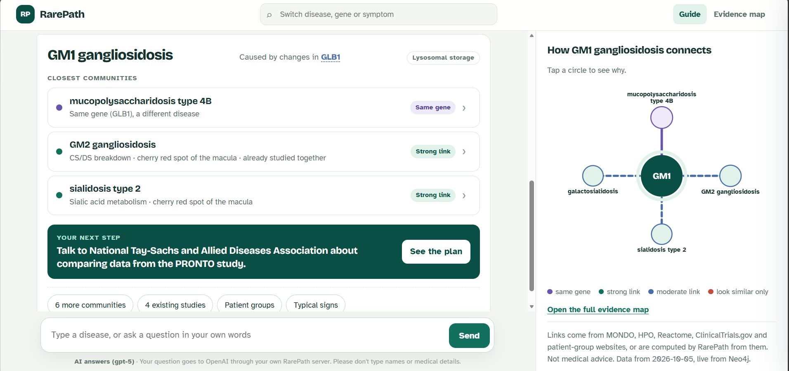
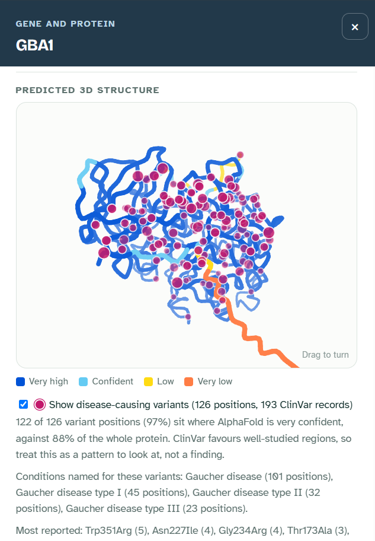

From a rare diagnosis to the people already working on it
RarePath is an evidence graph and a conversational guide. A family types the name of a rare genetic disease. RarePath shows which other disease communities share its biology, which studies and patient groups already exist, and one concrete next step. Every link names its source, and anything the system computed says so.
Research navigation, not medical advice. A research prototype built on public, aggregate data. It does not diagnose, predict how a disease will progress, decide who can join a study, or recommend treatments.
Scope
43 diseases in 3 families
Graph
Neo4j, CSV source of truth
Built with
Python, Neo4j, OpenAI, plain JavaScript and SVG
Data
MONDO, HPO, Reactome, UniProt, ClinicalTrials.gov

The guide for GM1 gangliosidosis: the three closest communities, one next step and a map of the connections.
The problem
Rare-disease data is organised by name. Useful partners are found by biology.
When a disease has no approved treatment, patient groups often organise the research themselves: they fund natural-history studies, build registries and look for partners. The most useful partner is often a different disease, one whose genes act in the same biological process, or a community that already runs a study the family could learn from.
Public databases hold these pieces, but they are split by disease name and by source. Finding that GM1 gangliosidosis and the GM2 gangliosidoses already share a natural-history study takes a specialist. Telling a real mechanism link from a symptom look-alike takes even more.
Question 1
Who shares our disease characteristics?
Communities with a shared gene, a shared biological process or a distinctive shared symptom pattern, each labelled with how strong the link is.
Question 2
What useful work already exists?
Studies and patient groups linked to the disease and to its neighbours, with the date each record was checked.
Question 3
What should we do together next?
One step, a checklist of what an expert must confirm, and a draft message to send.
Method
Two signals, kept apart on purpose
Most disease-similarity tools blend everything into one score. RarePath computes two independent signals for every pair of diseases and only then decides what the pair means:
Mechanism. The overlap of the Reactome pathways that each disease's causal genes take part in. Each pathway is weighted by how rare it is among the genes being compared, so a process that every lysosomal enzyme belongs to counts for little. Two diseases filed by MONDO as numbered types of one disease series (for example the Noonan syndromes) also count as a mechanism link. A shared causal gene is reported on its own.
Symptoms. simGIC over HPO annotations: shared symptoms weighted by how informative they are across all of HPO, so "seizure" counts for little and "cherry-red spot of the macula" counts for a lot. Lab findings such as enzyme activity are left out, so the symptom score cannot just repeat the mechanism.
Relation
Rule
What the guide says
Same gene
Shares a causal gene
"Same gene, similar signs" or "same gene, a different disease"
Mechanism and symptoms
Mechanism ≥ 0.25 and symptoms in the family's top quarter
Strong link
Mechanism only
Mechanism ≥ 0.25
Moderate link, the presentation differs
Symptoms, weak mechanism
Top-quarter symptoms, 0.10 ≤ mechanism < 0.25 (for example, the same MONDO class but no shared pathway)
Moderate link, needs review
Look-alike
Top-quarter symptoms, mechanism < 0.10
"Look similar, but different biology"
The gates were fixed before the results were inspected and are recorded in a manifest. Louvain clustering runs three times (mechanism only, symptoms only, combined), and in the combined run look-alikes carry zero weight, so symptoms alone can never pull two diseases into one community.
Checked against known biology. 23 checks must hold on every build, from GM2 diseases clustering together to GM1 and Morquio B being "same gene, different disease". For the two newer families, twelve of them were written down before their data was scored, and all twelve held on the first run.
Grounded answers. The chat sends the model only numbered facts from the graph. It must cite them, and the server deletes any citation that does not match a fact. Without the server, the page answers from the same facts offline.
Results
Three disease families, three kinds of insight
Lysosomal storage20 diseases · started here
GM1 gangliosidosis has no approved treatment. RarePath shows the GM2 gangliosidoses as its strongest neighbour (a shared breakdown process, the same cherry-red spot), and finds that a completed natural-history study, PRONTO, already enrolled children with both.
One gene, two diseases: GLB1 causes both GM1 gangliosidosis and Morquio B, a skeletal disease.
A look-alike: Canavan disease (not lysosomal) mirrors Krabbe disease in infancy but shares no gene or process.
The 10× case (a hypothesis): reusing an existing natural-history study instead of starting one could cut the time to comparable data from roughly four years to roughly four months. The assumptions about data access and timelines have not yet been tested with patient groups (sources and assumptions).
Changes in one gene, CEP290, appear in RarePath as three different diseases: Joubert syndrome 5 (brain), Senior-Loken syndrome 6 (kidney and retina) and Meckel syndrome 4 (usually lethal around birth). The guide shows them as one gene community and names the NIH ciliopathy study that recruited people with Joubert, Meckel and related conditions.
A look-alike: Prader-Willi syndrome shares obesity and hypogonadism with Bardet-Biedl syndrome but is an imprinting disorder. It is shown as a caution, never a partner.
Existing work: a phase 3 trial enrolled people with Bardet-Biedl and Alström syndromes together.
Noonan, Costello, cardiofaciocutaneous, Legius syndromes and neurofibromatosis type 1 are caused by different genes in one signalling pathway (RAS-MAPK). A single recruiting biorepository already covers five of them.
One gene, two diseases: PTPN11 causes both Noonan syndrome 1 and LEOPARD syndrome 1.
A counterexample: Aarskog-Scott syndrome has a Noonan-like face but a gene outside the pathway, and RarePath keeps it apart.
Every gene name opens a panel that goes from disease to protein. It shows what the protein does (UniProt), which diseases in RarePath it causes, and a rotatable AlphaFold model coloured by AlphaFold's own confidence. Disease-causing missense variants from ClinVar are placed on the model, but only where the variant's reference amino acid matches the model's sequence.
One gene, two diseases, one protein: some GLB1 variants are recorded for both GM1 gangliosidosis and Morquio B, and you can see where they sit on the enzyme.
A pattern, measured fairly: across 2,633 ClinVar variants in 32 proteins, disease-causing missense changes fall where AlphaFold is very confident 1.11 times as often as chance within each gene. Ciliopathy proteins show the clearest enrichment (1.53×). RAF1 goes the other way: its Noonan variants cluster around Ser259, in a flexible regulatory segment. ClinVar favours well-studied regions, so this is a pattern to explore, not a result.

GBA1 (Gaucher disease): 126 disease-causing missense positions on the predicted structure.Open GM1, then click GLB1 →
What I learned
Decisions that mattered
A single similarity score hides the most important case
Diseases that look alike but work differently are where families get misled. Keeping mechanism and symptoms apart made "look-alike" a first-class answer instead of a false positive.
Write the checks before tuning the scores
The first scoring version passed six of eight textbook checks: it split the GM2 diseases and called Morquio B "similar" to GM1. I fixed both with general rules (a curated disease-series link and a cap on broad pathways), not pair-specific tweaks, and wrote the new families' predictions down before scoring them.
Passing checks is not the same as being right
All twelve predictions for the new families held. Reading every pair anyway showed true relatives labelled as look-alikes: PTPN11 and RAF1 act at different steps of one cascade, and Reactome files those steps in different pathways. The fix targets the cause (a weak link for diseases in the same mechanism-defined MONDO class), is documented as a post-hoc change, and is guarded by new checks. Now only two pairs are labelled look-alikes, Krabbe–Canavan and Bardet-Biedl 1–Prader-Willi, and both involve counterexamples I designed. The third, Aarskog-Scott, stays unlinked from Noonan 1 because its symptom overlap is not high enough.
Relative weights break when the data grows
Pathway rarity was first measured against the whole panel. Adding two new families made lysosomal pathways look rarer and would have changed old answers. Measuring rarity within each family keeps the original 190 lysosomal pairs identical after expansion, and a unit test guards that.
Show less, and let people ask
Three rounds of feedback moved the interface from a dense dashboard to a conversation: three communities, one next step and a small map first, with everything else one question or click away.
Reproducibility is a feature
Every download is reused if present, written atomically and recorded with its version and SHA-256 checksum. The graph's source of truth is two CSV files under version control, so any link can be traced to the run that made it.
Limits
What RarePath does not claim
It is a research-navigation tool, not a diagnostic or treatment tool. A link between two diseases is a reason to investigate together, not evidence that a treatment transfers.
The 43 diseases were chosen by hand to test specific claims. Results describe this panel, not all rare disease.
Reactome pathway membership is coarse, and HPO annotation depth varies between diseases.
Study status is a dated snapshot. Eligibility must always be checked on the live ClinicalTrials.gov record.